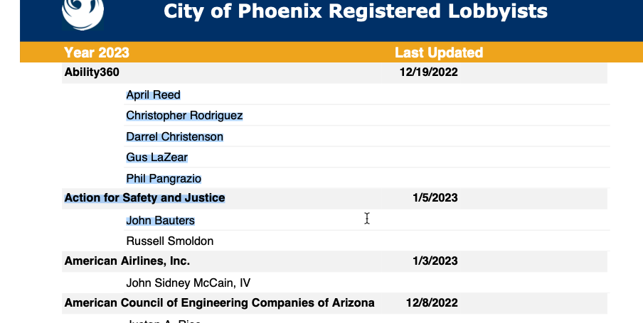
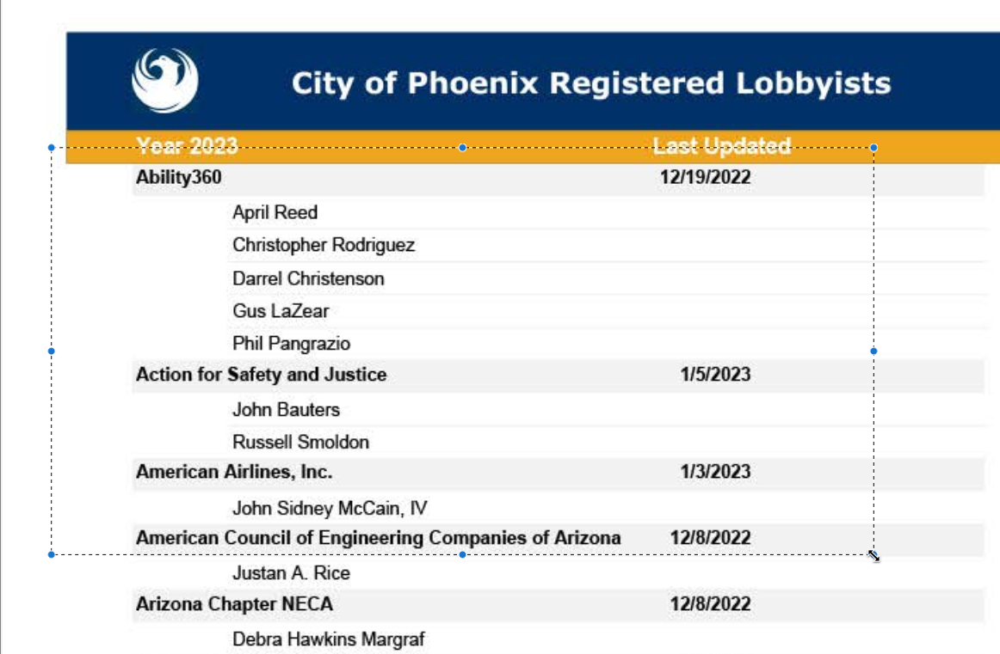
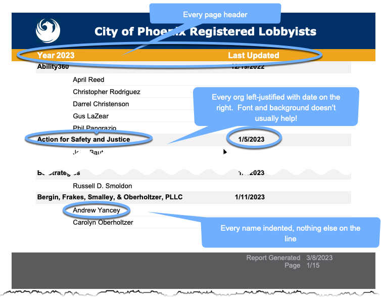
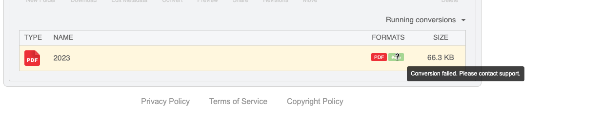
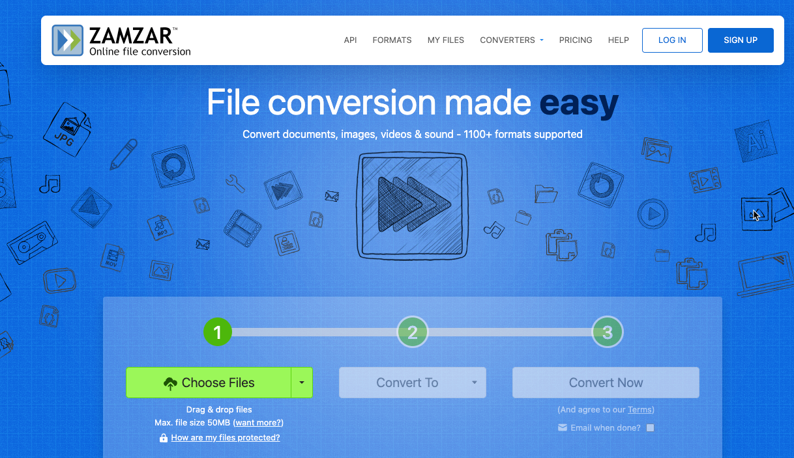
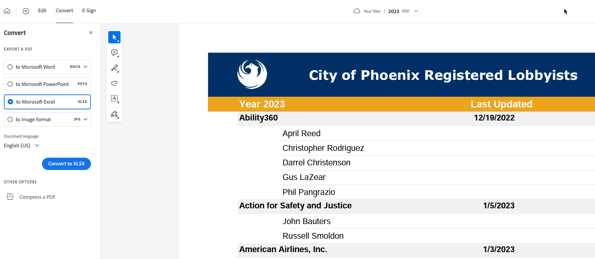
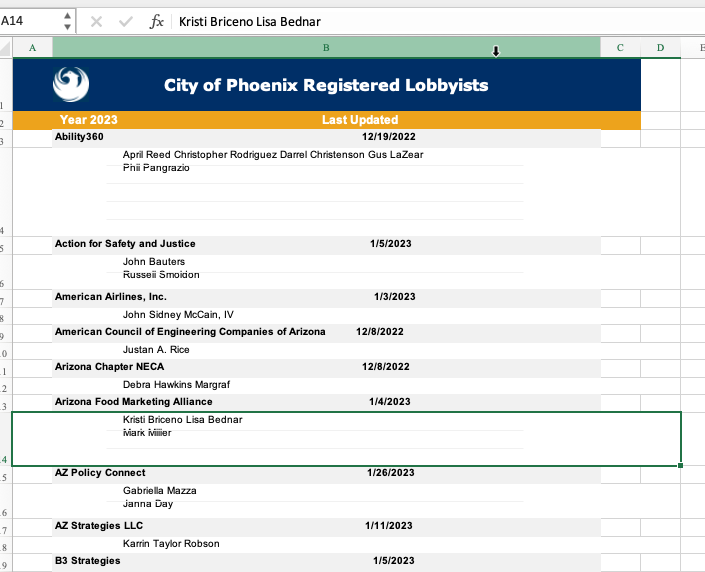
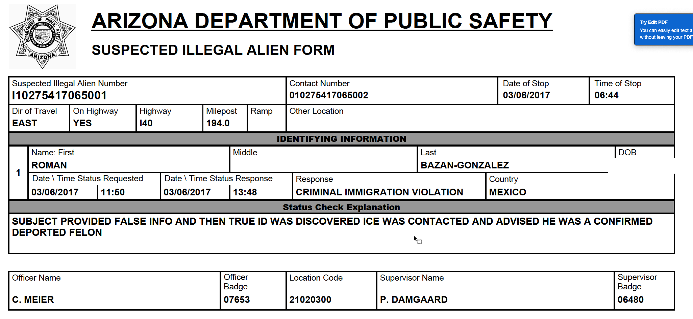

26 Working with PDF files
26.1 The PDF problem
Many government agencies distribute data in PDF, or Adobe Portable Document Format. As the full name implies, these are documents, not data. It is geared at getting text and images properly placed on a page, not creating tidy data as we have been dealing with in previous chapters.
Some software – Excel, Google Sheets, Microsoft Access and others – create PDF’s as one of their output formats. In fact, there is an entire ecosystem of pdf report makers, such as Crystal Reports. But converting them back into a usable dataset is often a challenge because we want columns and rows, not positions of words on a page.
Some people call the process of returning a PDF to a data format as “scraping”. Others call it “report mining”. People with a lot of money can use automation tools, notable Altria’s Monarch product, to do this at scale with few errors, but it costs at least $2,000 / year / person for software like this, so few reporters have access.
Understanding your pdf
PDF’s come in two very different types. The first is the more common version: reports generated from other software, such as Quarto, that contain text similar to a formatted Google or Word doc. The other is an image file, which is what is produced by scanning old documents, or sometimes from public records requests in which the agency has printed out a document, redacted it, and scanned it back into an electronic form for distribution.
If there are a lot of hand-written annotations on the page, then it is most likely an image. Another test is to try selecting the text on the screen. If you can’t do it (your cursor turns into an image selection tool, or it just selects the whole page), you are really only dealing with pixels and, to the computer, it is nothing different than a picture of your dog. If the selection covers the text and skips around, then it has underlying text and it can be used with most pdf parsing programs.1


When you have an image, you will need a first step, or more expensive software, to deal with it. Most reporters use Google Pinpoint or DocumentCloud to do the “optical character recognition”, or OCR, necessary to work with them. A full version of Adobe Acrobat (not the reader) will also work. Some of the more expensive products listed below have versions that include OCR. But just know that if you have an image, your ability to parse these could be very difficult.
Developing a strategy
Every PDF project is different. There are a few strategies you can employ to make it a little more replicable, but it’s always a difficult problem that doesn’t translate well from project to project.
If you are going to spend money on a tool for anything in data journalism, this is probably the place to spend it.
Here are some things to think about:
Try every simple tool and see if anything works. Each of the tools that turn PDFs into data work in a slightly different way, and each one makes different kinds of mistakes. It’s very easy to run a test set of documents through each product and see if any works almost perfectly.
Consider re-typing! If you have a pdf created from a spreadsheet, you will likely spend less time retyping 100 or so rows if the simple tools don’t work.
You may have to use a combination of the tool and a program to get the data you want. If that is the case, try to find a conversion that preserves the position on the page, which is the one thing that’s accurate in the PDF. In that case, you write programs or spreadsheet formulas to look for a pattern like a date in certain columns that can then be used to identify different kinds of lines.
Consider whether you really need the PDF in data form at all. If, for example, your goal is to see if the same names show up in different documents, Pinpoint or DocumentCloud might do just as well using a different process called entity extraction.
Example document
The document we’ll use for testing is the most recent lobbying report from the city of Phoenix. This is a bare-bones report of 14 pages, which has repeated sections of the names of individual lobbyists underneath the name of the lobbying company and the date filed:

Work from the goal backwards
The goal would be to have one dataset with the following columns:
- Date of filing
- Name of lobbying organization
- Lobbyist name 2
The filing and organization data would be repeated for each of the lobbyists.
This seems so simple! In your head, you can see exactly how that would work. But now you have to spend some time thinking about how you’ll get there.
One trick in reversing PDFs is to look for anything with a pattern that distinguishes one KIND of row from another – a heading, an indentation, etc. In this case, it’s the line with the date at the end that will make the biggest difference.
In this case, we have to find a way to apply the name of the organization and its most recently updated date to all of the rows of the lobbyist names. The pattern is that there is no date on the lobbyist list, but there is always a date on the organization row. (Sometimes indentations and formatting can help, but not always.)
26.2 PDF conversion tools
You can’t just open a pdf or import it into an R program or Excel. Instead, you’ll need a tool to make the conversions. Here are some of the common ones used in newsrooms.
Tabula
Tabula.technology is a downloadable program that, once unzipped into your applications or document folder, runs in a browser. The most recent version is more than 5 years old, though, so it isn’t being actively updated or refined. Because it’s a Java-based program, it may not be possible to easily use it on all computers. I’m not sure it’s worth fiddling with if it doesn’t work on yours.
Here’s a quick video of how Tabula works on this document:
(I cut at least 5 minutes of waiting out of this video!)
Cometdocs
Usually, Cometdocs is one of the most reliable conversions. But even after setting up an account, this is what I got:
At times, Investigative Reporters and Editors has arranged for free professional accounts. Check if they still have the program if you’re a member.

zamzar
Zamzar did quite well with this, producing a file that can be used because it kept the concept of two columns and didn’t smush rows together.

Adobe Acrobat ($)
Every ASU student has an automatic account for the full version of Adobe Acrobat. The online version has limited capabilities, but it also allows you to download the full version. But in this instance, it failed miserably:


It tried to replicate the way the data looks in the page, which smushed together the individual lobbyists even though they’re clearly on separate lines.
Able2Extract ($)
Able2Extract from Invetintech.com is an all-purpose PDF extractor and producer, with the professional version costing $200. It’s got a lot of options for tricky tables, and it also does OCR if necessary before trying to extract any information. (Only Acrobat on the above list does that as well.) It’s the one I use most frequently. In this case, it did nothing different than the free versions, but it also permits you to keep the position on the page instead of converting to an Excel or CSV file, making it easier if you want to manually parse the lines.
Google Pinpoint’s Table Extractor
Google Pinpoint is a service available only to journalists. You have to apply for an account and, for the time being, apply for the beta add-on.
Having Google Pinpoint is a great option if all you want to know is whether the same entity shows up across documents. It also provides free audio and video transcription, and free OCR of image documents. It’s similar to DocumentCloud, but is geared less at publishing documents and more at managing the collection of material vacuumed up in an investigation.
For now, it doesn’t work very well on our sample document. It’s just not the right form for it. It works best on collections of individual forms with headings , where one PDF is one form. An example of a good document for Pinpoint is a collection of “Suspected Illegal Alien Form” documents from AZDPS, where each box has a label and it’s not a table:

26.3 Finishing up
Using the csv file produced by Able2Extract, here’s one method for finishing up, using formulas in Google Sheets to figure out how to put together the pages. Here are the steps I took:
- Remove all empty rows, so that copying an pasting is easier.
- Ad an ID column of sequential numbers before the first column.
- Use a formula to determine if the cell with the “date” is empty:
=if (isblank (c2, "No", "Yes")) - For both the company name and the date: if the flag = “Yes”, then use the value on this this row in the appropriate column. If it’s “No”, use the value directly above the current cell. For example,
=if( d2 = "Yes", b2, e1) - Convert the formulas to values by copying, then pasting values only through Paste Special after selecting A1.
- Remove some of the extra rows from page headers
- Remove the rows that are company names , since we now have them next to the individuals, and remove the columns I worked off of.
This Google Sheet shows how some of the data was transferred from the converters, and the final spreadsheet that is in “tidy” format.
26.4 Use a program instead
We won’t go through all of the methods of using a program to deconstruct PDFs, but you’ll sometimes find that it’s easier to program it than to go through all of the manual steps. This Quarto document shows how you might process our example . There are a number of functions you’ve never seen in here before, since we’re working with vectors and lists to begin with rather than data frames.